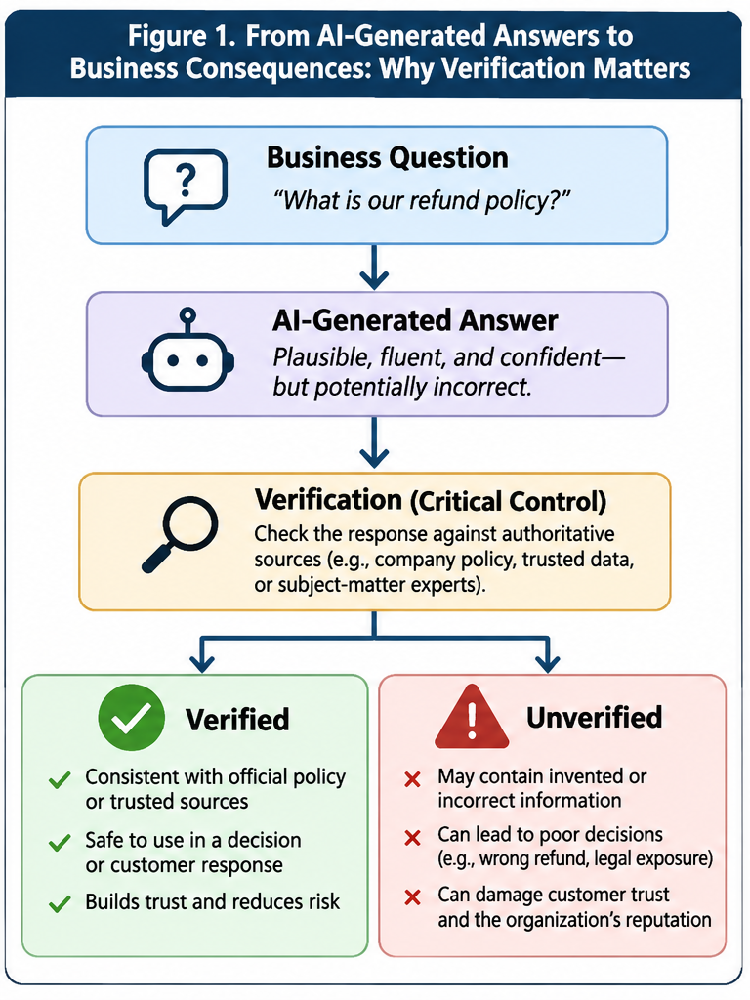
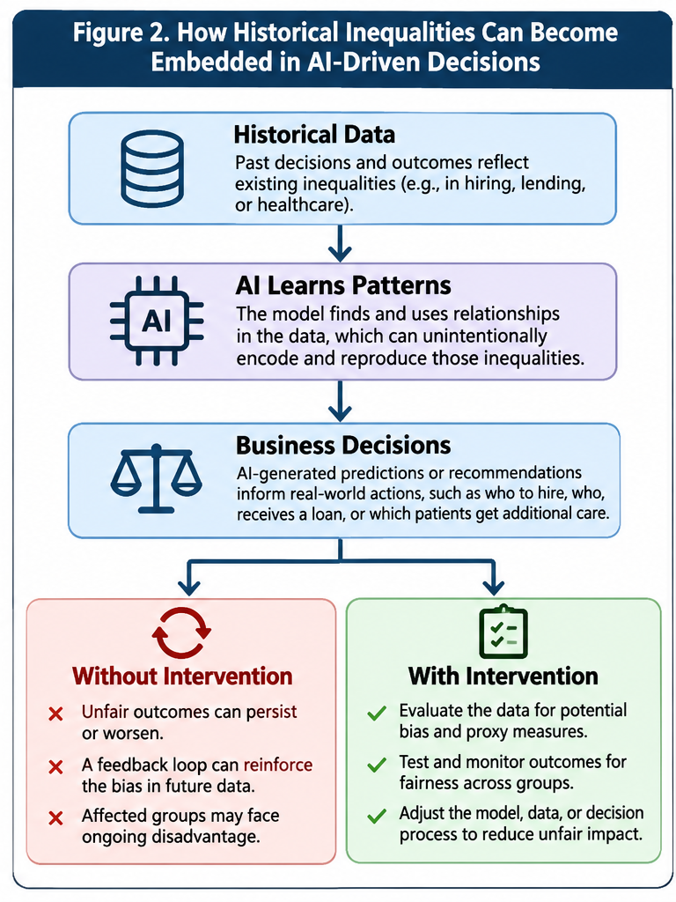

5.1 AI Ethical Stewardship
Judgment, verification, fairness, and responsibility in the intelligent enterprise
The résumé that never reached a human
Imagine applying for a job that fits your experience. Your résumé is polished, your references are strong, and you would be happy to explain your qualifications. But you never get an interview. A screening system rejected you before a recruiter opened your file. You do not know why, and nobody seems able to explain it.
This is not just a hypothetical concern. In 2023, the U.S. Equal Employment Opportunity Commission announced a settlement with iTutorGroup after alleging that its application software automatically rejected female applicants aged 55 and older and male applicants aged 60 and older. The company agreed to pay $365,000 and take other corrective steps. The allegation was not that a human recruiter had consciously rejected each person. It was that the organization's hiring process had encoded a discriminatory rule. 1
Now reverse the scenario. An AI assistant enthusiastically recommends a candidate, approves a customer for a product, or summarizes a company's financial position. Its answer is polished and confident. But a key fact is invented, the underlying data are unrepresentative, or the recommendation violates a policy that the system never saw. A slick interface does not rescue a bad decision.
The manager's challenge is therefore more demanding than asking whether AI is accurate on average. When should a business trust, question, restrict, or reject an AI-supported recommendation? And who must answer when things go wrong? These questions sit at the heart of AI ethical stewardship.
What is AI ethical stewardship?
AI ethical stewardship is the responsible use, evaluation, and oversight of AI systems so that their benefits do not come at the expense of accuracy, fairness, privacy, accountability, or human well-being. Stewardship means looking after something consequential on behalf of others. In business, those “others” include customers, employees, applicants, shareholders, suppliers, and communities.
Pearson's 2026 AI-readiness framework treats ethical stewardship as a foundational capability for graduates. It emphasizes four practical habits: critically examining AI recommendations and outputs; verifying their accuracy; recognizing bias, fairness issues, and limitations; and attending to privacy and other ethical considerations. 2 Notice the verbs. This is not a course in memorizing abstract moral principles. It is about what a capable employee actually does when a system offers an answer.
Three related ideas help clarify the territory. Ethics asks what we ought to do, particularly when decisions affect other people. Compliance asks what laws and rules require. Governance establishes who decides, what must be checked, and how an organization responds when a system fails. These ideas overlap, but they are not interchangeable. A discounting algorithm might comply with applicable law yet still exploit customers who have few alternatives. A well-intentioned employee might make an ethically attractive choice but violate confidentiality rules. Sound stewardship requires judgment across all three.
It is tempting to imagine AI ethics as a choice between innovation and caution. That is too simple. A hospital that refuses useful AI tools can also impose costs through missed opportunities. A retailer that delays a fraud detection upgrade may expose customers to losses. The right question is not “AI or no AI?” It is “Which use, under what conditions, with which safeguards, and for whose benefit?”
Nor does stewardship require every graduate to become an AI engineer. A marketing associate who verifies a campaign claim, a financial analyst who questions a generated forecast, and a human resources manager who challenges an unfair screening rule are all practicing it. The skill is portable because AI increasingly appears inside ordinary business workflows.
The information-systems foundation: data, information, and decisions
An information system combines technology, data, people, and processes to support organizational work and decision-making. Technology matters, but it is only part of the system. A customer relationship management application can store interactions, yet its value depends on whether staff enter useful records, whether the data are reliable, and whether managers act appropriately on what they learn.
Data are recorded observations: a transaction amount, an applicant's work history, a customer complaint, or a delivery date. Information is data interpreted in context so that it becomes useful for a decision. A list of late shipments is data; a report showing that delays concentrate at one warehouse is information. AI can help turn large quantities of data into classifications, predictions, summaries, and recommendations. But the transformation does not automatically make the result correct or wise.
Businesses have used information technology for decades: mainframes processed transactions; databases and enterprise systems connected functions; the internet and cloud computing extended access and scale; analytics helped organizations predict and optimize. Generative AI adds a particularly accessible interface: employees can ask questions in natural language and receive draft analyses, code, documents, or recommendations. Some systems also use tools to retrieve records or perform actions. This expands who can work with complex information—and expands who must exercise judgment.
A tactical information system primarily improves an existing operation: routing deliveries, reconciling invoices, or answering routine customer questions. A strategic information system changes how a firm competes, such as using data to create a distinctive service or new business model. Ethical stewardship matters at both levels. A flawed routing system may inconvenience drivers and customers. A flawed strategic platform can scale an unfair practice across an entire market.
This is why AI should be understood as part of a sociotechnical system: outcomes emerge from technology interacting with human incentives, organizational routines, and institutional rules. A model can be statistically impressive while the surrounding business process remains poorly designed. If employees are rewarded solely for processing more claims, for example, an AI tool that accelerates denials may intensify a bad incentive rather than solve a business problem.
The practical lesson is to follow the entire decision chain: Where did the data come from? What does the model produce? Who interprets it? Who acts? Who can challenge the result? Ethical problems often enter through the connections between these steps, not through a single dramatic software failure.
Critical thinking: a persuasive answer is not necessarily a sound answer
The first stewardship capability is critical thinking about AI outputs. This means examining a recommendation's assumptions, evidence, alternatives, and consequences rather than accepting it because it came from a sophisticated system. Critical thinking is not automatic skepticism. It is disciplined curiosity.
Suppose an AI assistant tells a regional manager to close a poorly performing store. Revenue is declining, margins are thin, and nearby locations appear stronger. The recommendation sounds sensible. But what if the store also serves as a pickup point that drives online sales? What if a nearby competitor has just closed? What if the revenue data omit recently negotiated corporate accounts? The manager should ask which objective the AI optimized, which evidence it used, and what information may be missing.
This exposes a fundamental distinction between a prediction and a decision. Predicting that a customer is likely to cancel a subscription is not the same as deciding what the company should do about it. Offering a discount might retain the customer, but it might also reward threats to leave, disadvantage loyal customers, or reduce profitability. The model can estimate outcomes; managers still have to choose objectives and weigh tradeoffs.
Another risk is automation bias, the tendency to give excessive weight to a computerized recommendation. An employee may notice a problem but defer to the dashboard because “the system must know something I don't.” This is especially dangerous when the AI provides a detailed explanation. Explanation-like text can make a recommendation feel carefully reasoned even when its evidence is weak.
One practical technique is to ask for the strongest alternative interpretation. If an AI attributes declining sales to poor salesperson performance, what else could explain the pattern? Inventory shortages, pricing changes, a weak territory, or seasonal demand might all matter. A good analyst does not merely request a second answer from the same system; the analyst seeks independent evidence that could change the conclusion.
Confabulation (hallucination): when AI makes things up
Generative AI introduces a distinctive problem: confabulation, commonly called hallucination. It occurs when a system generates false, fabricated, contradictory, or insufficiently supported content and presents it as if it were reliable. It might invent a legal precedent, fabricate a citation, combine figures from different fiscal years, or attribute a quotation to someone who never said it. The error may be glaring. More often, it is embedded in an otherwise plausible response.
Why does this happen? Large language models learn statistical patterns from vast collections of examples. They generate text by predicting sequences of tokens—words or parts of words—conditioned on the prompt and prior context. This process can produce useful factual explanations, but the ability to generate a fluent sentence is not the same as checking whether that sentence is true. NIST explicitly identifies confabulation as a generative-AI risk, including fabricated justifications and citations. 3
Imagine a junior analyst asking for a comparison of three competitors' revenue growth. The AI returns a polished table with percentage changes and a persuasive interpretation. One figure is invented. Another comes from a different reporting period. The resulting ranking is wrong, but nothing in the formatting reveals the problem. A manager who copies the table into a strategy presentation has converted a model error into an organizational decision risk.
Confabulation also differs from ordinary uncertainty. A system might be unable to answer a question because the relevant document is unavailable or the facts are disputed. A responsible response would say so. The more troubling failure occurs when the system fills the gap with confident-sounding detail. Fluency is not evidence, and confidence is not verification.
Figure 5.1 From AI-Generated Answers to Business Consequences: Why Verification Matters

Source: Author-created adaptation.
Show long description
The figure illustrates how an AI-generated response can influence business decisions and why verification is an essential safeguard against inaccurate or fabricated information.
The process begins at the top with a business question: “What is our refund policy?” An arrow leads downward to an AI-generated answer. The figure describes this answer as plausible, fluent, and confident, but potentially incorrect. This emphasizes that the apparent quality and confidence of an AI response do not establish its factual accuracy.
A second arrow leads to a verification stage, identified as the critical control in the process. Verification involves checking the AI-generated response against authoritative information, such as official company policies, trusted organizational data, or knowledgeable subject-matter experts.
From the verification stage, the diagram branches into two possible outcomes.
The left branch, shown in green, is labeled “Verified.” It represents an answer that has been checked and found consistent with official policies or trustworthy sources. Such information can be used to support an appropriate business decision or customer response. Verification helps build customer trust and reduces organizational risk.
The right branch, shown in red, is labeled “Unverified.” It represents information that has not been adequately checked and may contain invented, inaccurate, or misleading claims. Relying on such information could lead to incorrect decisions, inappropriate refunds, legal exposure, diminished customer trust, or reputational damage.
The figure's central message is that generating an answer and establishing its accuracy are two different activities. AI systems can produce convincing responses without ensuring that those responses are correct. Organizations must therefore establish verification practices appropriate to the consequences of using the information.
Key takeaway: AI-generated information should not be treated as reliable merely because it sounds authoritative. Verification is the critical step between an AI-generated response and a responsible business decision.
The problem is not limited to chatbots. An AI-generated summary can omit an important qualification; a coding assistant can suggest a function that does not exist; a customer-support system can misstate a refund policy. Some failures are factual; others are interpretive. An accurate quotation taken out of context can mislead just as effectively as an invented one.
Consider a real customer-service dispute. In Moffatt v. Air Canada, a traveler relied on an airline chatbot's incorrect explanation of how to obtain a bereavement fare after travel. A British Columbia tribunal held Air Canada responsible for the inaccurate representation and ordered compensation. The decision was a particular dispute under Canadian law, not a universal rule for every chatbot. Its business lesson is clear: customers encounter the chatbot as part of the company's service, not as a detached science experiment. 4
Managers should resist two opposite overreactions. One is to trust every articulate output. The other is to conclude that generative AI is unusable because it can be wrong. Human analysts also misremember, misread, and invent explanations. The useful comparison is between workflows: which process, including verification and oversight, delivers better outcomes at an acceptable cost? The more consequential the decision, the stronger the evidence required before acting.
Verifying AI-Generated Information: From plausible text to defensible evidence
The second capability is verification: establishing whether important claims are supported by trustworthy evidence. Critical thinking asks whether a conclusion makes sense and what it overlooks. Verification asks a narrower question: Is this claim actually true, and can we demonstrate it?
A useful distinction is between three types of output. A brainstorming suggestion may be evaluated for creativity and usefulness. A factual assertion requires evidence. A recommendation combines facts with judgments and therefore requires both evidence checking and a review of the objectives and assumptions. Treating these outputs identically wastes effort. Nobody needs to fact-check every slogan idea; a forecast used to justify a multimillion-dollar investment deserves much more attention.
Start with source tracing. If an AI states that a company's operating margin rose, find the relevant annual report or regulatory filing. Confirm the period, denominator, units, and accounting definition. If a model cites a research article, verify that the article exists and supports the specific claim. A source can be genuine while the AI's interpretation of it is wrong. “It provided a link” is not the same as “the link proves the point.”
Next, check provenance, the origin and handling of information. Was a figure copied from an approved database, scraped from an outdated website, or inferred from incomplete records? Is the source authoritative for this particular question? A company press release may accurately describe a product launch but is not an independent assessment of its commercial success. Verification is not merely collecting citations; it is matching evidence to claims.
Some organizations use grounding to connect AI outputs to identifiable source material. With retrieval-augmented generation (RAG), a system retrieves relevant documents and supplies them to a language model when composing a response. A human resources assistant might retrieve the current benefits handbook rather than answer from general training alone. This often improves usefulness and traceability. It does not eliminate errors: the wrong document can be retrieved, an outdated policy can be indexed, or the model can misread the correct paragraph.
A robust workflow distinguishes a draft from an approved answer. For low-risk tasks, a quick spot-check may be enough. For customer-facing policy statements, a designated employee might verify the answer against a controlled source. For financial disclosures, legal interpretations, or employment decisions, subject-matter review and documented approval may be necessary. The aim is risk-based verification—more scrutiny when the cost of error is greater.
Here is an ordinary workplace example. A new analyst asks AI to summarize an industry and receives a claim that a rival controls 42 percent of the market. Rather than repeating the number, the analyst checks the market definition, year, geography, and original source. It turns out that 42 percent refers to one product category in a single country, not the entire industry. The analyst corrects the report and notes the remaining uncertainty. That is ethical stewardship in action: not a heroic refusal to use AI, but a small, disciplined intervention that prevents a misleading business decision.
Verification also has a stopping rule. Perfect certainty is usually impossible. Managers must decide what evidence is sufficient for the decision at hand. A reversible marketing experiment may proceed with reasonable uncertainty. A decision that could deny someone employment or medical coverage warrants a higher threshold, more documentation, and a clear path for review.
Bias, Fairness, and Responsible Decisions: accurate predictions can still produce unfair outcomes
The third capability is recognizing bias, fairness, and AI's limitations. In everyday language, bias can mean prejudice. In analytics, it can also mean a systematic distortion in data, measurement, or model behavior. The two meanings often intersect, but they are not identical. A model may produce unfair outcomes without containing an explicit instruction to discriminate.
Start with historical data. A hiring system trained on past hiring decisions may learn the preferences and exclusions embedded in those decisions. Removing a protected characteristic does not necessarily solve the problem. Other variables—such as postal code, employment gaps, or educational history—may serve as proxy variables, indirectly carrying information related to characteristics the organization should not use in that way.
Historical bias does not disappear simply because a decision is made by an algorithm rather than a person. When AI systems learn from past decisions and outcomes, they may reproduce the inequalities embedded in that history. Figure 2 illustrates how these patterns can influence business decisions and, without appropriate intervention, become self-reinforcing.
Figure 5.2 How Historical Inequalities Can Become Embedded in AI-Driven Decisions

Source: Author-created adaptation.
Show long description
The figure illustrates how historical inequalities can become embedded in artificial intelligence systems and subsequently influence organizational decisions. It also shows how organizations can intervene to identify and reduce unfair outcomes.
The process begins at the top with historical data. This data represents past decisions and outcomes in areas such as hiring, lending, and healthcare. Because historical data reflects real-world organizational practices, it may contain patterns of unequal treatment or unequal access to opportunities and resources.
An arrow leads downward to the second stage, labeled “AI Learns Patterns.” During training, an AI model identifies statistical relationships within the historical data. If those relationships reflect existing inequalities, the model may learn and reproduce them, even when discrimination was not explicitly programmed into the system.
A second arrow leads to the third stage, labeled “Business Decisions.” Here, AI-generated predictions or recommendations influence real-world actions, such as determining which applicants receive job offers, which customers qualify for loans, or which patients receive additional healthcare services.
The diagram then divides into two possible paths.
The left path, shown in red, is labeled “Without Intervention.” When organizations deploy AI systems without adequately evaluating their fairness, existing inequalities may persist or become more pronounced. If the resulting decisions generate new training data, a feedback loop may reinforce the original bias. Consequently, affected groups may experience continuing disadvantages, even though the organization is using an apparently objective algorithm.
The right path, shown in green, is labeled “With Intervention.” This path illustrates three actions organizations can take to reduce unfair outcomes. First, they can evaluate training data for potential bias and examine whether seemingly neutral variables act as proxies for sensitive characteristics. Second, they can test and monitor outcomes to identify differences in how the system treats or affects different groups. Third, they can adjust the model, training data, or underlying decision-making process when evidence of unfair outcomes emerges.
These interventions do not guarantee that every fairness concern will disappear. Rather, they establish an ongoing process for identifying, evaluating, and addressing potential harms.
The figure's central message is that AI systems do not automatically eliminate human or organizational bias. Because models learn from historical data, they can reproduce patterns of inequality embedded in that data. Responsible AI stewardship therefore requires attention not only to how an algorithm operates, but also to the data used to train it, the outcomes it produces, and the organizational decisions it influences.
Key takeaway: An AI system can reproduce unfair outcomes without explicitly using protected characteristics. Organizations must evaluate the data, model behavior, and real-world consequences to identify and reduce bias.
A second source of trouble is measurement. Organizations often use a convenient metric as a stand-in for something harder to observe. Suppose a health program wants to identify patients who need extra care. It uses past healthcare spending as a proxy for medical need. That sounds practical: patients with greater needs might generate higher costs. But spending also reflects access to care. A widely cited study found that a healthcare risk algorithm using cost as a proxy for need systematically underestimated the health needs of Black patients relative to White patients with similar scores. 5
The lesson extends far beyond healthcare. A company might treat past purchases as a measure of customer interest, even though customers with less disposable income cannot buy as much. A university might treat participation in unpaid internships as a measure of motivation, overlooking who can afford them. A model can optimize the chosen metric while missing the thing the organization truly values.
Fairness becomes more complicated when managers confront classification errors. A false positive occurs when a system incorrectly flags something as positive—for example, labeling a legitimate transaction as fraud. A false negative occurs when it misses a case it was supposed to detect—for example, allowing an actual fraudulent transaction through. Tightening a fraud threshold may catch more fraud while inconveniencing more innocent customers. Loosening it may improve convenience while increasing losses. The appropriate balance depends on costs, harms, context, and the people affected.
There is no single fairness metric that resolves every situation. One team might focus on equal error rates across groups. Another might prioritize equal access to beneficial outcomes. These goals can conflict, particularly when underlying conditions and measurement quality differ. Managers should ask what fairness means for this decision, whose interests are at stake, and which tradeoffs the organization is prepared to defend.
Bias can also enter after deployment. A predictive policing or fraud system directs attention toward certain cases. More attention generates more recorded incidents, which then become training data. This is a feedback loop: the system's decisions help shape the evidence used to justify future decisions. A similar loop occurs when recommendation engines promote products that already receive attention, making those products appear increasingly popular.
Practical evaluation therefore goes beyond overall accuracy. A manager should ask how the system performs for different relevant groups, which errors are most harmful, whether the training data resemble current conditions, and how people can report mistakes. Not every group difference proves discrimination; differences require context and investigation. But a single average accuracy score can hide important failures.
The iTutorGroup case illustrates a direct exclusion rule. The healthcare case illustrates something subtler: an apparently neutral objective can produce unequal outcomes because the proxy measure is flawed. Both teach the same managerial habit. Do not stop at “the algorithm followed its instructions.” Ask whether the instructions, data, and business objective were appropriate in the first place.
Privacy, confidentiality, and intellectual property
The fourth capability asks students to recognize ethical boundaries around information. Privacy concerns people's ability to control or reasonably expect limits on the collection and use of information about them. Confidentiality concerns protecting information entrusted to an organization, including employee records, customer files, trade secrets, and nonpublic business plans. The concepts overlap, but a document can be confidential without containing personal information, and personal information can raise privacy concerns even when it is widely available.
AI makes these boundaries easier to cross accidentally. An employee might paste customer complaints into a public chatbot to obtain a summary, upload a contract for revision, or ask an assistant to analyze employee performance notes. Each action can move information into a new technical and contractual environment. The important questions are not simply whether the AI is useful, but whether the employee is authorized to share the material, how the provider handles it, and whether the output could expose sensitive details.
Data minimization means using only the information reasonably needed for a legitimate task. Purpose limitation means resisting the temptation to reuse data for unrelated purposes without appropriate justification. A retailer may need a delivery address to fulfill an order; it does not follow that the same information should be fed into every personalization experiment. “We already have the data” is not an ethical argument.
Imagine a sales team using AI to predict which customers are likely to renew. The team has access to purchasing history, service tickets, and notes from account managers. Some notes contain personal information about customers' family circumstances. Even if those notes improve prediction, should they be used? A responsible manager would question necessity, access rights, customer expectations, retention, and potential harm—not just whether a feature raises the model's accuracy.
Generative AI also introduces intellectual property (IP) questions. A marketing team may generate images, product copy, or software code. Can it safely publish the result? Does it resemble protected third-party material? Who owns the output? Are there contractual restrictions on the inputs? These questions are distinct from privacy. Protecting confidential product plans does not establish that an AI-generated advertisement is free of copyright concerns.
In a 2025 report, the U.S. Copyright Office explained that AI-assisted work can qualify for copyright protection where sufficient human authorship is present, but merely providing prompts does not automatically make wholly AI-generated expressive material copyrightable. The specific facts and jurisdiction matter, and litigation and policy continue to evolve. 6 For a manager, the lesson is to treat commercial use as a review decision, not as an automatic right granted by the appearance of a finished file.
The same caution applies to synthetic voices, faces, and images. A brand might find it inexpensive to generate an endorsement-style video, but viewers could reasonably believe a real person participated. Even where the law is unsettled, misleading customers or exploiting a person's likeness can damage trust. Disclosure and consent are not merely paperwork; they help maintain the integrity of the business relationship.
Privacy and IP protections should be built into everyday workflow. Employees need clear rules about which tools may receive which data, approved ways to redact or aggregate sensitive material, and a route for asking questions. An unusable policy that simply says “be careful” is not much of a policy. Good stewardship makes the safe path easy to follow.
From ethical principles to business practice
Knowing the right principles is only the beginning. A company needs a way to turn them into decisions. This is where AI governance becomes useful—not as an elaborate bureaucracy that every student must memorize, but as a practical system of responsibility. NIST's voluntary AI Risk Management Framework organizes organizational work into four functions: Govern, Map, Measure, and Manage. In plain English: establish responsibility, understand the use case, test what matters, and respond to risks over time. 7
Consider a bank evaluating an AI assistant for loan officers. Governance determines who may approve its use and which decisions remain with employees. Mapping identifies the data involved, affected customers, and consequences of mistakes. Measurement examines factual accuracy, fairness, and error patterns. Management specifies monitoring, escalation, correction, and when the tool should be paused. These activities are not a one-time launch checklist; conditions change as products, data, and customer behavior evolve.
Human oversight must be meaningful. Putting a human's name at the end of an automated workflow does not guarantee accountability. A reviewer needs sufficient information, time, competence, and authority to disagree. If employees are penalized for slowing down the process, they may rubber-stamp the system's output. The organization's incentives can undermine its own safeguards.
Transparency means providing relevant information about AI use and limitations. Explainability concerns the ability to understand why a system produced an outcome or which factors mattered. Contestability means giving affected people a reasonable opportunity to question and seek review of consequential decisions. These concepts are related but distinct. A company might disclose that AI was used without explaining a specific decision. It might explain the decision without offering a way to correct an error.
Return to the internship applicant rejected by an automated screener. A responsible process might disclose that automated tools assist screening, preserve an understandable record of relevant criteria, and provide a route for correcting inaccurate information or requesting human review. The exact obligations depend on law and context, but the managerial logic is broader: if a process can seriously affect a person, it should not be impossible to question.
Regulation increasingly reflects this risk-based logic. The European Union's AI Act establishes requirements for particular AI uses, including transparency and human oversight for specified systems. Some obligations have different application dates, and implementation details continue to evolve; managers should check current rules rather than assume a single global standard. The European Commission issued guidance in 2026 on transparency obligations, including disclosures for certain AI interactions and generated content. 8 9
Security deserves attention without turning this into a cybersecurity chapter. A prompt injection occurs when untrusted content—perhaps a retrieved webpage or document—tries to redirect an AI assistant's behavior. The danger grows when an assistant can send emails, access records, or execute transactions. The managerial principle is straightforward: untrusted material should not be allowed to grant itself authority, and systems should receive only the permissions necessary for their tasks. NIST's generative-AI guidance treats these risks as part of broader organizational risk management. 3
Organizations must also consider workforce effects. An AI tool may save time while changing who performs work, who is monitored, and which skills are valued. A manager who celebrates productivity gains but ignores retraining, employee voice, or surveillance concerns has only counted part of the impact. Similarly, energy and resource use can matter when AI is deployed at scale. Stewardship means recognizing externalities—costs and benefits borne by people beyond the immediate buyer and seller—even when they are absent from the project's financial spreadsheet.
The goal is not to eliminate every risk. It is to assign responsibility, make tradeoffs visible, prevent avoidable harms, and create a reliable way to learn from mistakes. A small company may implement these practices with a short policy and clear approval roles. A regulated multinational may need specialized teams and formal audits. The scale differs; the underlying logic does not.
Ethical stewardship as a business capability
Ethical stewardship is sometimes described as a brake on innovation. In practice, it can be a source of competitive strength. Customers are more willing to use services they understand and trust. Employees are more likely to adopt tools when they know what is permitted and how to challenge mistakes. Managers can move faster when decision rights, evidence standards, and escalation routes are clear.
This does not mean every ethical choice immediately increases profit. A company may reject a profitable but intrusive use of customer data. It may delay a product launch until a high-impact system is adequately tested. Those decisions can impose real short-term costs. Strategy requires recognizing that reputation, legal exposure, customer relationships, and organizational learning also have economic consequences, even when they are difficult to measure.
An ethical advantage is especially meaningful when competitors can purchase similar AI models. If the underlying technology is widely available, a firm may differentiate itself through better data practices, more reliable workflows, faster correction of errors, and a culture that rewards thoughtful judgment. The competitive asset is not merely the model. It is the organization's ability to use the model responsibly and effectively.
For a graduate entering the workplace, the message is empowering. You do not need to know how to train a neural network to recognize a bad assumption, trace a questionable figure, protect a confidential document, or ask who bears the cost of an error. Those are management skills, and AI makes them more valuable.
A practical ethical stewardship decision test
Before using an AI-generated answer or approving an AI-supported process, ask: What decision is being made, and who could be affected? What evidence supports the output, and what remains uncertain? Could the data, objective, or error pattern disadvantage particular people? Are the information and intellectual property rights being respected? Who can review, correct, or stop the decision?
These questions are intentionally simple. They are not a substitute for legal review or specialized technical testing. They are a portable habit of mind. A junior analyst can use them before sending a report. A product manager can use them in a launch meeting. An executive can use them before delegating greater authority to an AI system.
Practice scenario: the internship-screening proposal
A company proposes using AI to rank internship applicants. The vendor promises faster screening and provides an impressive accuracy figure. The training data come from past hiring decisions, the system gives applicants no explanation, and managers can override recommendations only after a lengthy approval process. The proposal also suggests collecting applicants' public social-media posts.
What would ethical stewardship require? Start by asking what “accuracy” means: agreement with past hiring decisions, subsequent employee performance, or something else? Check whether the training data reproduce historical exclusions. Challenge whether social-media information is necessary and appropriate. Ask how applicants can correct errors and how recruiters can exercise genuine judgment. Finally, compare the benefits of speed against the risks of exclusion, privacy intrusion, and reputational damage.
There is no magic ethical score that answers every question. The point is to make the assumptions, evidence, affected parties, and decision rights visible before the system becomes business as usual.
Key Terms and Definitions
- AI ethical stewardship:
- The responsible evaluation, use, and oversight of AI across its lifecycle. It weighs accuracy, fairness, privacy, accountability, and human well-being, and assigns people responsibility for consequential outcomes.
- Data:
- Recorded observations such as transactions, dates, complaints, or work histories. Data become useful only when their quality, source, coverage, and context are understood.
- Information:
- Data interpreted in context so they can support a question or decision. For example, shipment records become information when analysis shows delays are concentrated at one warehouse.
- Sociotechnical system:
- A system whose results arise from people, processes, technology, incentives, and institutional rules working together. A model may perform well while the surrounding workflow still produces harmful decisions.
- Automation bias:
- A tendency to give too much weight to a computer-generated recommendation. It can lead a person to ignore conflicting evidence or defer to an AI result even when they have reason to question it.
- Confabulation (hallucination):
- False, fabricated, contradictory, or unsupported content generated by an AI system and presented as plausible. Examples include invented citations, incorrect policy details, or figures combined from different reporting periods.
- Verification:
- Checking an important AI-generated claim against suitable, authoritative evidence. The level of checking should match the consequences of relying on the claim.
- Provenance:
- The origin of information and the record of how it was collected, changed, and passed along. Provenance helps an analyst judge whether a source is current and appropriate for a claim.
- Grounding:
- Connecting a generated response to identifiable source material, such as an approved policy or verified record. Grounding improves traceability but does not guarantee that the system retrieves or interprets the source correctly.
- Retrieval-augmented generation (RAG):
- A method in which a system retrieves relevant documents and supplies them to a language model while it generates an answer. The retrieved material can make answers more current and traceable, but still needs review.
- Bias:
- A systematic distortion in data, measurement, model behavior, or outcomes. Bias can arise from historical exclusions, poor proxies, uneven data quality, or deployment practices, even without an explicit instruction to discriminate.
- Proxy variable:
- An indirect measure used in place of the characteristic an organization actually wants to assess. If the proxy reflects unequal access or opportunity, predictions based on it can systematically misrepresent need or ability.
- False positive / false negative:
- A false positive incorrectly flags a case as positive, such as labeling a legitimate payment as fraud. A false negative misses a case that should have been flagged, such as allowing a fraudulent payment through.
- Feedback loop:
- A cycle in which system-supported decisions influence the data used for later decisions. For example, increased scrutiny can produce more recorded incidents, which may then appear to justify further scrutiny.
- Data minimization:
- Using only the data reasonably necessary for a legitimate task. Limiting collection and access reduces exposure and discourages reuse of personal or confidential information without a clear need.
- Purpose limitation:
- Keeping data use within appropriate, defined purposes. Information gathered to deliver an order, for example, should not automatically be reused for unrelated profiling or experiments.
- Intellectual property:
- Legal rights in creative works, inventions, software, and other protected intangible assets. AI use raises questions about inputs, similarity to third-party works, ownership, and permitted commercial use.
- Transparency:
- Giving affected people relevant information about where AI is used, what it can do, and what limitations matter. Disclosure alone may not explain an individual decision or provide a way to challenge it.
- Explainability:
- The ability to understand the factors or reasons behind a system output. An explanation can help with review, but it must be accurate and useful for the specific decision.
- Contestability:
- A reasonable opportunity for an affected person to question a consequential decision and seek correction or human review. It gives people a route to raise errors the system or organization missed.
- Human oversight:
- Meaningful human capacity and authority to review, change, or stop an AI-supported decision. Reviewers need enough time, information, competence, and organizational support to disagree with the system.
- Prompt injection:
- An attempt to redirect an AI system through untrusted text in a document, webpage, or other input. Risk increases when the system can access records or take actions, so permissions and boundaries matter.
- AI governance:
- The roles, rules, and processes an organization uses to oversee AI systems. Governance establishes who approves a use, what evidence is required, how performance is monitored, and how problems are corrected.
Footnotes
- U.S. Equal Employment Opportunity Commission. (2023, September 11). “iTutorGroup to Pay $365,000 to Settle EEOC Discriminatory Hiring Suit.” https://www.eeoc.gov/newsroom/itutorgroup-pay-365000-settle-eeoc-discriminatory-hiring-suit
- Pearson & Amazon Web Services. (2026). AI Readiness Report 2026. Pearson. https://www.pearson.com/content/dam/global-store/global/resources/ai-readiness/AI-Readiness-Report-2026.pdf
- Autio, C., Schwartz, R., Dunietz, J., et al. (2024). Artificial Intelligence Risk Management Framework: Generative Artificial Intelligence Profile, NIST AI 600-1. https://doi.org/10.6028/NIST.AI.600-1
- Civil Resolution Tribunal of British Columbia. (2024). Moffatt v. Air Canada, 2024 BCCRT 149. https://decisions.civilresolutionbc.ca/crt/crtd/en/525448/1/document.do
- Obermeyer, Z., Powers, B., Vogeli, C., & Mullainathan, S. (2019). “Dissecting racial bias in an algorithm used to manage the health of populations.” Science, 366(6464), 447–453. https://doi.org/10.1126/science.aax2342
- U.S. Copyright Office. (2025). Copyright and Artificial Intelligence, Part 2: Copyrightability. https://www.copyright.gov/ai/
- National Institute of Standards and Technology. (2023). Artificial Intelligence Risk Management Framework (AI RMF 1.0), NIST AI 100-1. https://doi.org/10.6028/NIST.AI.100-1
- European Commission. (2026, July 20). Guidelines on transparency obligations for providers and deployers of AI systems. https://digital-strategy.ec.europa.eu/en/library/guidelines-transparency-obligations-providers-and-deployers-ai-systems
- European Union. (2024). Regulation (EU) 2024/1689 laying down harmonised rules on artificial intelligence (AI Act). https://eur-lex.europa.eu/eli/reg/2024/1689/oj